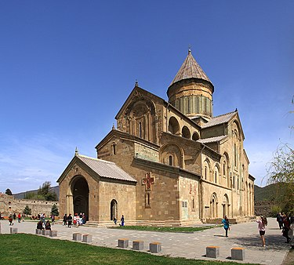

get to know georgia
სვეტიცხოვლის საკათედრო ტაძარი — საქართველოს მართლმადიდებელი ეკლესიის მთავარი საპატრიარქო საკათედრო ტაძარი, საქართველოს დედა-ტაძარი, საქართველოს კათოლიკოს-პატრიარქთა ინთრონიზაციის (აღსაყდრების) ადგილი, შუა საუკუნეების საქართველოს მრავალი მეფის, მათი ოჯახის წევრების და პატრიარქთა საკრძალავი, XI საუკუნის ქართული ხუროთმოძღვრების ძეგლი, ერთ-ერთი ოთხ დიდ კათედრალთაგან (ოშკი, ბაგრატის ტაძარი, ალავერდი)[1]. მდებარეობს თბილისიდან 20 კმ დაშორებით, ქალაქ მცხეთაში. სვეტიცხოველში დაკრძალულია უფლის კვართი და წმ. ელია წინასწარმეტყველის მოსასხამი. იუნესკოს მსოფლიო კულტურული მემკვიდრეობის ძეგლი.
სვეტიცხოველი ყველაზე დიდი ისტორიული საეკლესიო ნაგებობაა საქართველოში დღემდე გადარჩენილთა შორის. იგი საუკუნეთა მანძილზე ქრისტიანული საქართველოს სარწმუნოებრივ ცენტრს წარმოადგენდა. ჯერ კიდევ IV საუკუნეში გაქრისტიანებულ მირიან მეფეს წმინდა ნინოს რჩევით აქ პირველი ეკლესია აუშენებია, რომელსაც ჩვენამდე არ მოუღწევია.
ტაძრის გეგმა
1970-1971 წლებში სარემონტო-სარესტავრაციო სამუშაოთა ჩატარების დროს (ხელმძღვანელი არქიტექტორი ვ. ცინცაძე) მიკვლეულ იქნა მისი საძირკვლის კვალი. ასევე მთლიანად შემოიხაზა იმ ბაზილიკის გეგმა, რომელიც აქვე ააშენა, წმ. ნინოს ეკლესიის დანგრევის შემდეგ, ვახტანგ გორგასალმა V საუკუნის II ნახევარში. XI საუკუნეში დაზიანებული ბაზილიკის ადგილზე ქართლის კათოლიკოსმა მელქისედეკმა ახალი ტაძარი ააგო. მან ხუროთმოძღვრად არსუკისძე მიიწვია. მშენებლობა 1010 წელს დაიწყო და 1029 წელს დამთავრდა. თავისი არსებობის მანძილზე სვეტიცხოველი არაერთხელ გადაკეთებულა. 1283 წელს ტაძარი მიწისძვრამ დააზიანა. XIV საუკუნეში გიორგი ბრწყინვალემ აღადგინა ტაძრის გუმბათი. იმავე საუკუნის ბოლოს „იავარჰყვეს სპათა ლანგ-თემურისათა“ — მოანგრიეს დასავლეთის მკლავის ბურჯები, დააქციეს გუმბათის ყელი, მაგრამ მთელი ნაგებობის დანგრევა მაინც ვერ შესძლეს. XV საუკუნის დასაწყისში მეფე ალექსანდრე დიდმა ტაძარი კაპიტალურად შეაკეთებინა. 1656 წელს როსტომ მეფისა და მარიამ დედოფლის თაოსნობით კვლავ აღადგინეს გუბათის ყელი.
1813 წლის 30 ოქტომბერს ექზარქოს ვარლაამის დროს განახლებულ იქნა სვეტიცხოვლის კარიბჭე, რასაც ადასტურებს ეპიგრაფიკული წარწერა.
საქართველოს დაპყრობისა და საქართველოს ავტოკეფალიის გაუქმების შემდეგ, რუსი ეგზარქოსები სვეტიცხოველზე ზრუნვით თავს არ იწუხებდნენ. ასეთმა დამოკიდებულებამ თავისი შედეგი გამოიღო. 1826 წლის 1 მაისს ჩამოიქცა მცხეთის სვეტიცხოვლის გალავანში არსებული სამრეკლო, ნანგრევებში მოყვა გალავნის კედელთან მდგარი საცხოვრებელი სახლი, რის შედეგადაც დაიღუპა 8 წლის ბავშვი. 1827 წელს თბილისის სამხედრო გუბერნატორმა, გენერალმა სიპიაგინმა, რუსეთის იმპერიის მთავარი შტაბის უფროსს წარუდგინა მოხსენება – გორისა და დუშეთის მაზრებში შექმნილი მდგომარეობის მიმოხილვა. გუბერნატორი ხაზგასმით აღნიშნავდა, რომ ხსენებულ მაზრებში სერიოზულად იყო დაზიანებული ეკლესიები, მათ შორის სვეტიცხოველიც. არსებული წესის მიხედვით, მოხსენება იმპერატორ ნიკოლოზ პირველს მიართვეს. მიუხედავად იმპერატორის ბრძანებისა, უსაშველოდ გაჭიანურდა სვეტიცხოვლის რესტავრაციის პროექტისა და ხარჯთაღრიცხვის შედგენა. ეს საქმე ვერ დასრულდა, ვერც ეგზარქოს იონას და ვერც მომდევნო ეგზარქოსის – მოსე ბოგდანოვ-პლატონოვის საქართველოში მოღვაწეობის პერიოდში და როგორც იქნა, საქმე დაიძრა ახალი ეგზარქოსის, არქიეპისკოპოს ევგენი ბაჟანოვის დროს – 1935 წელს. სვეტიცხოვლის რესტავრაციის პროექტისა და ხარჯთაღრიცხვის დოკუმენტაცია შეადგინა ინჟინერ-პორუჩიკმა ყორღანოვმა. რესტავრაციისთვის საჭირო თანხა 49 239 მანეთითა და 67 კაპიკით განისაზღვრა. მოგვიანებით, რესტავრაციისთვის საჭირო თანხა 29 934 მანეთსა და 36 კაპიკამდე შემცირდა. რესტავრაციის დაწყებამდე, იმხანად არსებული წესის მიხედვით, უნდა გამოცხადებულიყო ტენდერი, მაშინდელი ტერმინოლოგიით, საჯარო ვაჭრობა. ტენდერში გაიმარჯვა და მოიჯარადრე გახდა თბილისის მცხოვრები – ხეჩო დარჩილოვი. ყველაზე დიდი თანხა – 28 696 მანეთი გადაიხადა, მოიჯარადრის უფლების მოპოვებისთვის და სამუშაოსაც შეუდგა. არსებული წესის მიხედვით, ხეჩო დარჩილოვმა გირაოში ჩადო მისი კუთვნილი 2 საცხოვრებელი სახლი და დუქანი თბილისში, ასევე, სხვა უძრავი ქონება. კონტრაქტის ძალით, სარესტავრაციო სამუშაოები 3 წლის განმავლობაში უნდა დასრულებულიყო. მოიჯარადრე ხეჩო დარჩილოვმა ვალდებულება აიღო 1845 წლის ზაფხულისთვის თავისი სახსრებით გამოესწორებინა კომისიის მიერ მითითებული ნაკლოვანებები. ხეჩო დარჩილოვმა კარგად ისარგებლა მისდამი ასეთი ლოიალური დამოკიდებულებით, სასწრაფოდ რაღაც სამუშაოები შეასრულა, მაგრამ ძალზე უხარისხოდ. რაც მთავარია, არ შეუკეთებია ტაძრის სახურავი. სახურავიდან წყალი ტაძარში კვლავ ჩაედინებოდა და აზიანებდა თაღებსა და კედლებს. ხეჩო დარჩილოვს თავის მართლება აღარ დასჭირვებია. იგი ბუნებრივი სიკვდილით გარდაიცვალა. სინოდურ კანტორასთან ურთიერთობა უკვე მისმა შვილმა მოაგვარა და გირაოც დაიბრუნა. სვეტიცხოვლის სახურავიდან ტაძარში წყალი მომდევნო 6 წლის განმავლობაში კვლავ ძველებურად ჩაედინებოდა.